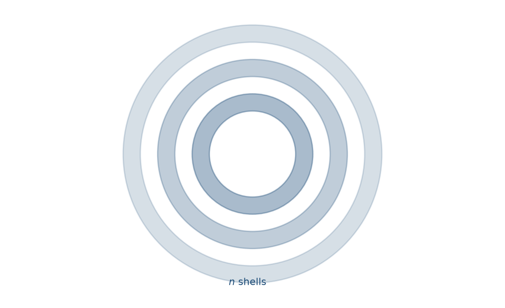
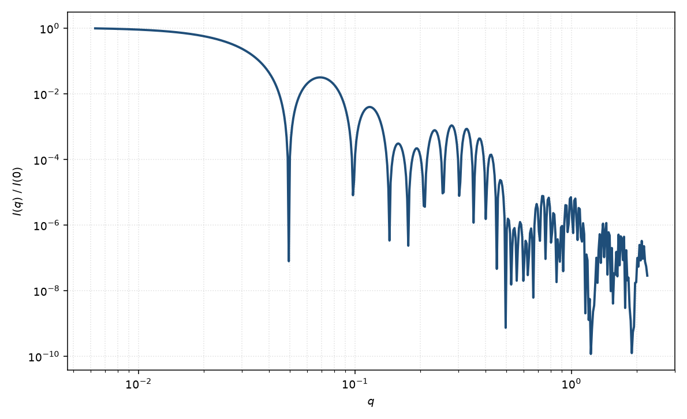

多层囊泡
multilayer vesicle
适用场景
多层囊泡（MLV、寡层脂质体）由若干同心双层与水层交替构成。中间 $q$ 可出现与膜间距 $d$ 相关的宽峰或次级振荡，层数 $n$ 不大时峰较宽。适用于阴阳离子表面活性剂混合物形成的寡层囊泡、未充分挤压的脂质体，以及“单壳囊泡拟合残差在膜峰处系统化”的样品。
层数趋于很大、侧向尺寸远大于膜间距时，更接近层状堆叠而非封闭球壳；此时应对照层状分类，而不是无限增加球壳层数。
物理图像
每一层膜是一个薄球壳，水层是相邻壳之间的溶剂间隙。总振幅为各壳振幅之和（Bergström 等对囊泡/片层的 SANS 分析；Pedersen 1997 的同心壳框架）。有限 $n$ 给出有限相干的层间干涉，峰宽约 $\sim 2\pi/(n d)$ 量级。
示意图


核心公式
出发点
多层囊泡是溶剂与膜沿半径交替的球对称剖面。相干散射振幅
$$F(q)=4\pi\int_0^{R_{\max}} r^2\bigl[\rho(r)-\rho_w\bigr]\frac{\sin(qr)}{qr}\,\mathrm{d}r,$$其中 $\rho_w$ 为水层（及囊外溶剂）的 SLD。第 $k$ 层膜占据 $R_{k,{\mathrm{in}}}\le r\le R_{k,{\mathrm{out}}}$，膜 SLD 为 $\rho_m$。
推导
每层膜的贡献与单层囊泡相同：均匀球原函数给出 $V(R)\Phi(qR)$，$V=4\pi R^3/3$，$\Phi(x)=3(\sin x-x\cos x)/x^3$。对 $n$ 层求和
$$A(q)=\sum_{k=1}^{n}(\rho_m-\rho_w)\bigl[V(R_{k,{\mathrm{out}}})\Phi(qR_{k,{\mathrm{out}}})-V(R_{k,{\mathrm{in}}})\Phi(qR_{k,{\mathrm{in}}})\bigr].$$等间距简化：$R_{k,{\mathrm{in}}}=R_0+(k-1)d$，$R_{k,{\mathrm{out}}}=R_{k,{\mathrm{in}}}+t$，$t$ 为单层膜厚，$d$ 为重复间距。水层衬度已选为参考，故水壳不再单独出现。稀释强度 $I(q)=n_{\mathrm{ves}}|A(q)|^2+B$。
低 $q$ 与渐近
$q\to 0$ 时 $\Phi\to 1$，$A(0)=(\rho_m-\rho_w)$ 乘全部膜体积（各层 $V_{\mathrm{out}}-V_{\mathrm{in}}$ 之和）。整体 $R_g$ 由多层的径向二阶矩决定，略大于最外半径对应的薄壳值。
径向周期 $d$ 在 $q_k\approx 2\pi k/d$ 附近产生布拉格样峰；有限外半径把峰宽调制为 $\sim\pi/R_{\max}$，不是无限层状晶体的 $\delta$ 函数。薄膜极限下每层 $\propto R_k^2 t\,j_0(qR_k)$，峰来自这些球面波的相长。
大 $q$ 尖锐膜界面给出 Porod $q^{-4}$。单层极限 $n=1$ 回到囊泡闭式。
参数表
| 参数 | 符号 | 含义 | 单位 | 典型范围 |
|---|---|---|---|---|
| 最内半径 | $R_0$ | 最内水核半径 | Å 或 nm | 50–2000 Å |
| 膜厚 | $t$ | 单层双层厚度 | Å | 20–50 Å |
| 重复间距 | $d$ | 相邻膜中心距 | Å | 50–200 Å |
| 层数 | $n$ | 同心膜的数目 | 无量纲 | 2–20（寡层） |
| 膜 / 水 SLD | $\rho_m,\rho_w$ | 双层与水层散射长度密度 | Å$^{-2}$ | 氘代可调 |
拟合注意
$n$ 与峰值锐度相关，但与尺寸多分散、间距涨落（准晶无序）竞争：三者都能把峰抹宽。优先用独立的层间距估计（例如宽角层状峰）固定 $d$，再拟合 $n$ 或无序度。
球对称假设要求囊泡近似等轴。巨大多层脂质体若成堆叠片，应改层状模型。磁性脂质体少见；若膜含磁性颗粒，磁 SLD 只存在于颗粒壳，而不是整层均匀磁化。
相近模型
参考文献
- Bergström, M.; Pedersen, J. S.; Schurtenberger, P.; Egelhaaf, S. U. Small-angle neutron scattering (SANS) study of vesicles and lamellar sheets formed from mixtures of an anionic and a cationic surfactant. J. Phys. Chem. B 1999, 103, 9888–9897. DOI: 10.1021/jp991846w
- Pedersen, J. S. J. Appl. Cryst. 1997, 30, 339–354. DOI: 10.1107/S0021889897002532